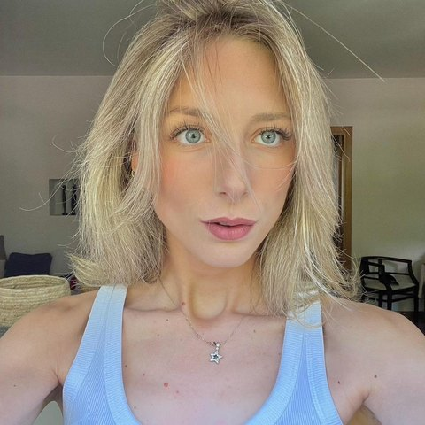
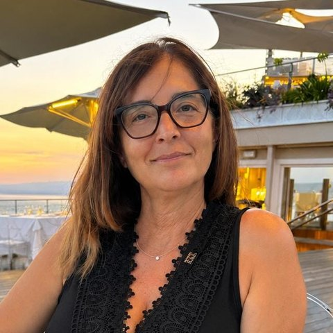
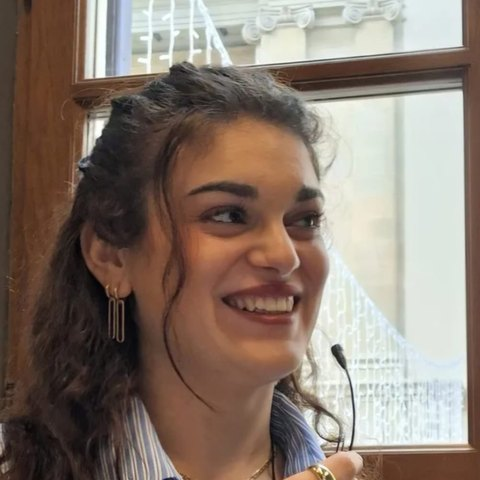
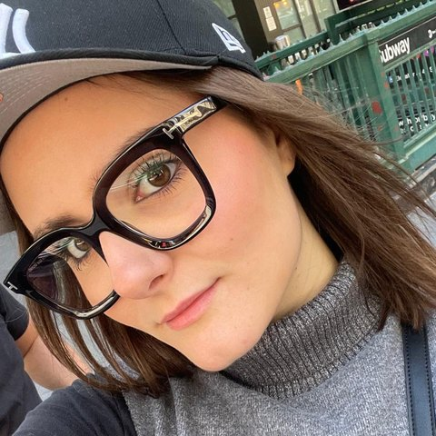
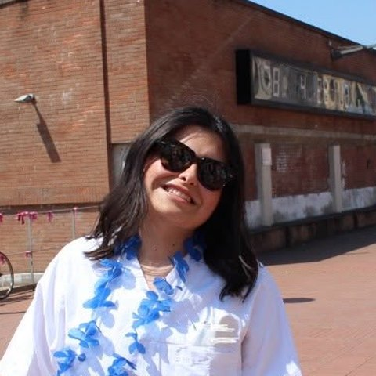

Non devi affrontare tutto da solo/a.
Fame di Vivere nasce per offrire ascolto, vicinanza e sostegno alle persone che vivono difficoltà legate ai disturbi alimentari e a chi sta loro accanto.
Crediamo nel valore dell'incontro e della condivisione. Attraverso le nostre attività, vogliamo creare uno spazio in cui sentirsi accolti, trovare informazioni e costruire relazioni di sostegno.
Vuoi conoscerci o partecipare alle nostre attività? Siamo qui per ascoltarti.
Da un'esperienza, il desiderio di aiutare.
Fame di Vivere è un'associazione di volontariato nata dal desiderio di aiutare gli altri e da differenti esperienze personali. Aver vissuto questa difficoltà ha fatto nascere la volontà di essere vicini a chi sta affrontando un percorso simile.
Vorremmo che nessuno dovesse vivere questa sofferenza. Per questo vogliamo offrire ascolto e sostegno, promuovere una maggiore consapevolezza e aiutare le persone a non sentirsi sole.
Ci unisce il desiderio di essere vicini alle persone che affrontano un disturbo alimentare, alle loro famiglie e a chi desidera comprendere meglio queste difficoltà.
Il nostro impegno si fonda sull'ascolto, sul rispetto e sulla partecipazione. Ogni persona porta con sé una storia diversa: vogliamo accoglierla con attenzione, senza giudizi.
Le persone di Fame di Vivere





Le figure professionali che ci affiancano
Favorire l'ascolto, ridurre l'isolamento, costruire una rete di sostegno.
Vogliamo offrire occasioni di incontro e condivisione a chi vive difficoltà legate ai disturbi alimentari e alle persone vicine.
Ci impegniamo a promuovere una maggiore conoscenza del tema, contrastare pregiudizi e aiutare le persone a orientarsi tra le risorse disponibili sul territorio.